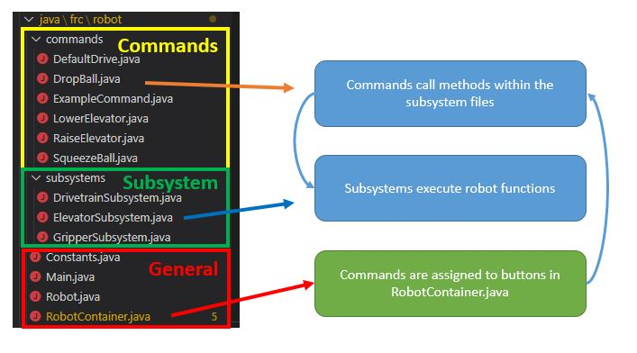

Overview
Controllers are operated by human players in order to command the robot. In this section, you will create the controller and button objects in Java. If you have completed the command section, you can then assign commands to specific button.

1. Creating a Joystick Object
The example below declares to the program that there is an object named XBoxController.
This should be placed under public class OI.
The port number tells the computer which USB slot this controller should be in.
XboxController <controllername> = new XboxController(0);
2. Creating Button Objects
In the example above, we create a button on a xbox controller named <controllerName>.
Note: Joysticks and the trigger are NOT considered buttons since their value can vary between 0 and 1
Syntax
new JoystickButton(<controllername>, <buttontype>)
| Button | Description | Example |
|---|---|---|
| kA | A button | new JoystickButton(Controller1,button.kA.value) |
| kB | B button | new JoystickButton(Controller1,button.kB.value) |
| kX | X button | new JoystickButton(Controller1,button.kX.value) |
| kY | Y button | new JoystickButton(Controller1,button.kY.value) |
| kBack | Back button | new JoystickButton(Controller1,button.kBack.value) |
| kStart | Start button | new JoystickButton(Controller1,button.kStart.value) |
| kBumperLeft | Left Bumper | new JoystickButton(Controller1,button.kBumperLeft.value) |
| kBumperRight | Right Bumper | new JoystickButton(Controller1,button.kBumperRight.value) |
| kStickLeft | Left stick press | new JoystickButton(Controller1,button.kStickLeft.value) |
| kStickRight | Right stick press | new JoystickButton(Controller1,button.kStickRight.value) |
3. Assigning Commands to Buttons
NOTE: To complete this section, you must have completed the command section of the is guide.
Depending on your design, you may want your buttons to behave differently. Here are 3 possible button types you can use, depending on your application.
Add this immediately after you have created your button object.
whenPressed
Command starts when button is pressed, and it runs until the command's isFinished() method is satisfied.
.whenPressed(new ExampleCommand());
whileHeld (Most Common)
Command runs while button is held down, and is interrupted once the button is released. Note that interrupting a command does NOT automatically end it! You will need to modify the interrupted() method in the command by anding end(); to make sure it stops.
.whileHeld(new ExampleCommand());
whenReleased
Start command when button is released, and run until the command's isFinished() method is satisfied.
.whenReleased(new ExampleCommand());
ExampleCommand